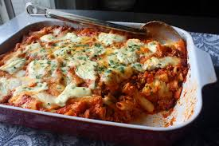

Odin Recipes
Baked Ziti

Description
Baked Ziti is an Italian dish loved by many. This dish consists of different cheeses, tomato sauce, and sausage. This dish is undoubtedly a hit!
Ingredients
- 3/4 Pound hot italian sausage
- 3/4 pound sweet italian sausage
- 2 tablespoons olive oil
- 1 large yellow onion,diced
- 1/2 teaspoon dried oregano
- 1/4 teaspoon dried thyme
- 1/4 teaspoon dried rosemary
- 2(24 ounce) jars prepared marinara sauce
- 2 cups water
- 1 (16 ounce) package ziti pasta
- 1 drizzle olive oil
- 1 1/2 cups whole-milk ricotta cheese
- 8 ounces mozzeralla cheese, cut into small cubes
- 1 cup grated Pecorino Romano cheese
- 1 teaspoon chopped flat-leaf(italian) parsley, or to taste